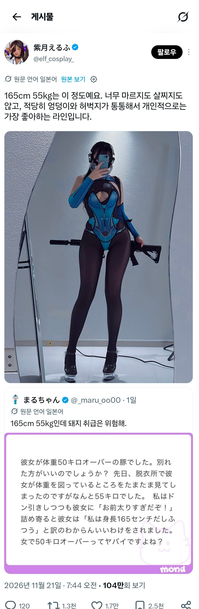
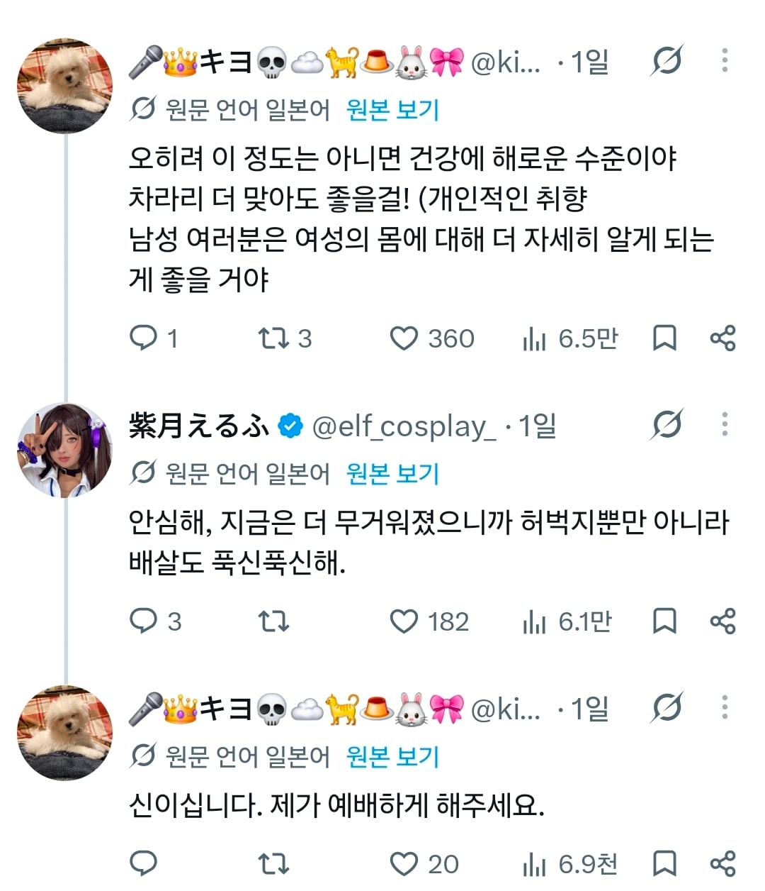
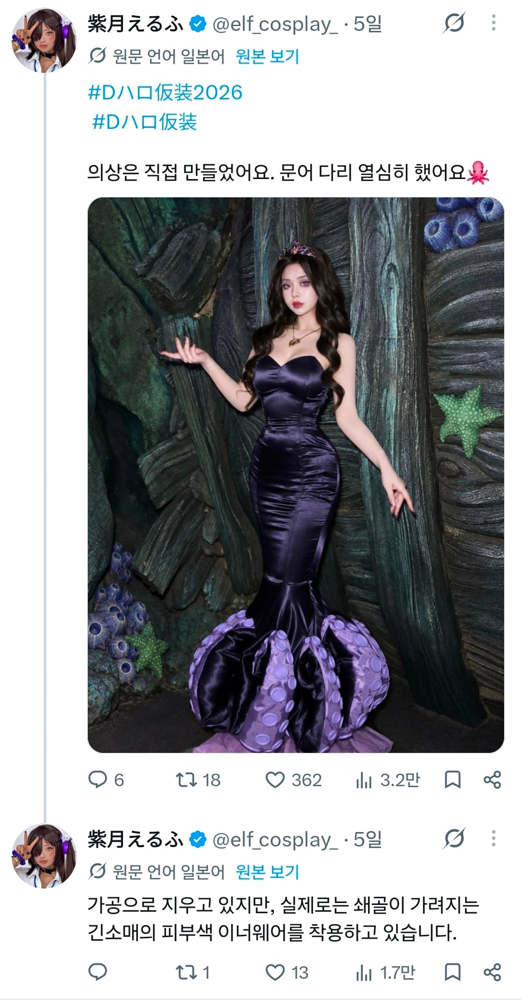
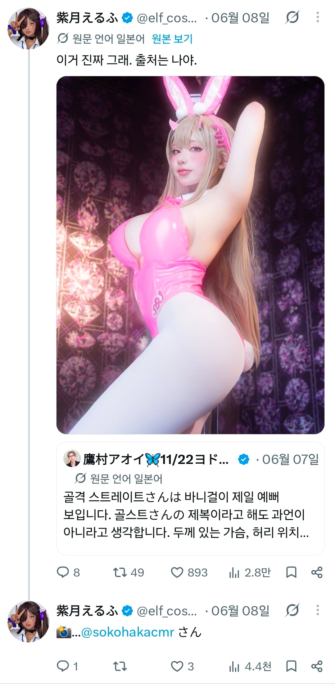

저 보라색 내용이
자기 여친이 55kg인걸 봤는데 뚱땡이라고 꼽줬다는 내용임
그거 인용하면서 165cm, 55kg설명중인 코스어
캬 가장 적절한 곳만 살이 붙는듯


과감한 코스가 꽤 있더라.


저 보라색 내용이
자기 여친이 55kg인걸 봤는데 뚱땡이라고 꼽줬다는 내용임
그거 인용하면서 165cm, 55kg설명중인 코스어
캬 가장 적절한 곳만 살이 붙는듯


과감한 코스가 꽤 있더라.
나도 여기 한표
155에 54는 돼지임? 급함 빨리
글쎄 55키로로 5년정도 있었는데
걍 운동여부 타고난체형 이런거 따라 갈릴듯
비율이 엄청 좋아보인다


가슴 크기가 저정도니 55kg에 저런 비율이 나오지
E컵 기준 한쪽당 4kg씩만 잡아도 비범한 비율이 나올 수밖에 없음
저 같은 키 몸무게에 가슴 엉덩이 없다고 생각해봐라
그 몇키로 짜리 살덩이들이 대부분 배 팔뚝 종아리 허벅지
이런데 들어가잇고 가슴은 aa컵
이런게 대부분 평균여자몸매.
그러니 165/55돼지 퉁퉁으로 보이는것도 맞아